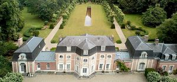
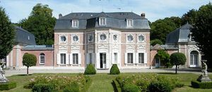

Recensement Jean-Claude Truffet
| Département | 80 — Somme |
| Canton | Abbeville |
| Commune | Abbeville |
| Type d'édifice | Château |
| Période d'origine | XV-XVII |
| Coordonnées GPS | 50° 05' 42" Nord, 1° 50' 36" Est |


deux châteaux dans cet article; Abbeville et Bagatelle. ABBEVILLE, en 1209, le comte de Ponthieu se fit construire un donjon d'allure encore romane. Il a été assez gravement endommagé au cours de la dernière guerre, mais restauré depuis. La tour, haute de trente mètres, possède un plan carré de dix mètres de côté; chacune de ses faces a été renforcée par trois contreforts plats, larges d'environ un mètre. Une tourelle polygonale datant du XVe siècle, lui a été ajoutée du côté nord; du côté sud on lui a accolé les bâtiments qui abritent le musée Boucher-de-Perthes; la porte de celui-ci est une uvre flamboyante. En 1939 il était couvert d'une toiture en pavillon; aujourd'hui celle-ci est presque plate. L'uvre a été réalisée en moellons de grès assez irréguliers ; les murs sont épais de deux mètres à la base, mais ils n'ont plus que 1,60 m au sommet. Les trois cordons horizontaux qui marquent extérieurement ses étages contournent les contreforts. L'intérieur est divisé en quatre niveaux dont l'un est voûté. Les deux niveaux supérieurs sont éclairés par deux fenêtres rectangulaires par face; au sud, on remarque au deuxième niveau une arcature romane en plein cintre qui déborde sur l'étage suivant.
Éléments protégés MH : le beffroi et la salle de la trésorerie : inscription par arrêté du 18 mai 1926. musée Boucher-de-Perthes.
BAGATELLE, à la sortie dAbbeville, se cache lun des plus délicieux châteaux que lon puisse voir de cette époque. Niché dans un décor de verdure qui lenclot tout entier, Bagatelle offre un ensemble unique en France de boiseries peintes, darchitecture, de mobilier et de décorations dépoque. Demeure familiale, Bagatelle conserve tout le charme vivant dune maison habitée. Paul de Wailly redessina le parc dans sa conception primitive liée à l'architecture du château. Un boulingrin ovale orné de deux statues de faunes, précède la façade d'entrée, tandis que le jardin, dessiné à la Française, s'insère dans un hémicycle de tilleuls plantés en 1750. Ce sont ces derniers qui avaient incité Abraham van Robais à acquérir le terrain afin d'y faire élever ce bâtiment. Un parc paysager de 10 ha, planté d'essences rares, prolonge ce jardin. L'ensemble est demeuré l'objet de soins constants de la part de Jacques Wailly, architecte paysager, fils de Paul et père du propriétaire actuel. En 1878, la ferme, devenue vétuste, a été remplacée par 2 ailes. Depuis, l'extérieur de la demeure n'a pas changé. Le château de Bagatelle appartient, aujourd'hui, à Mr Yannick Chagnon. Les de Wailly conserveront Bagatelle durant 2 siècles, avant de le vendre aux actuels propriétaires qui ont entrepris une campagne de restauration, des intérieurs et du jardin. Éléments protégés MH : le château : inscription par arrêté du 18 mai 1926. L'ensemble des jardins à la française et le parc: inscription par arrêté du 26 novembre 1946.
Famille de Jacques Wailly"
Deux châteaux dans cet article; Abbeville et Bagatelle grav-1-2. Bagatelle GPS : 50° 05' 42" Nord, 1° 50' 36" Est